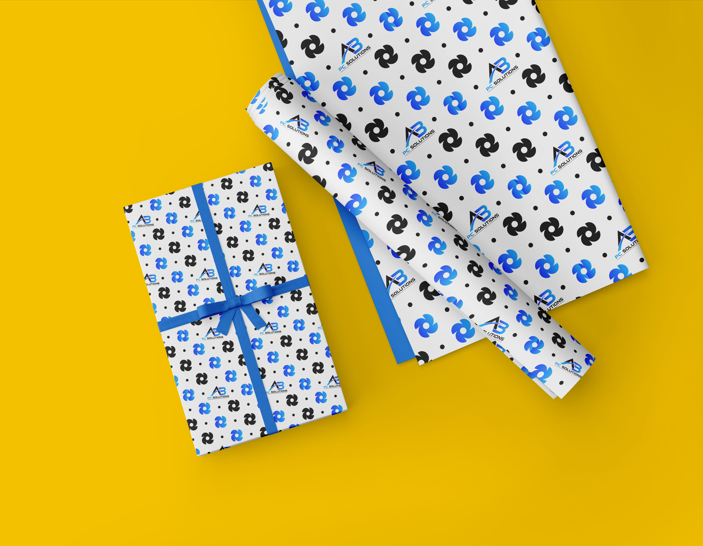

Pattern Design
Patterns that build visual identity.
Pattern design creates repeatable visual elements that can make a brand, product or social campaign feel more consistent. Useful for backgrounds, packaging, stationery and digital content.